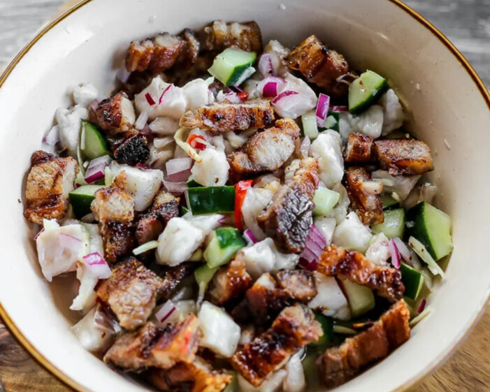
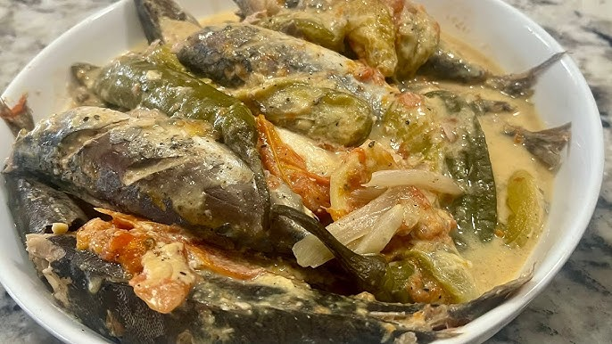
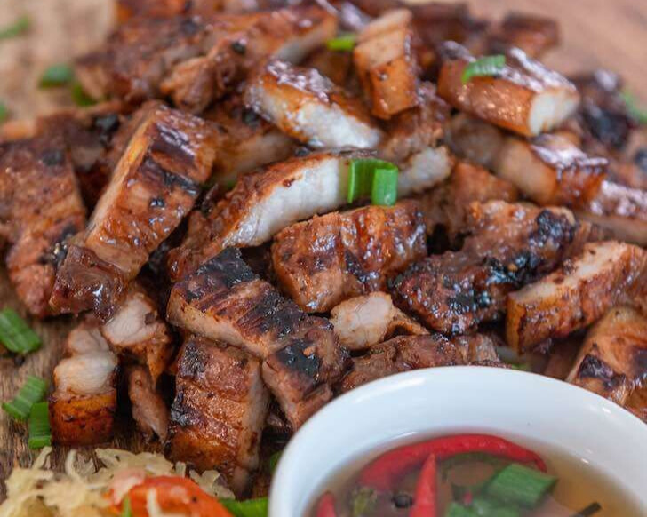
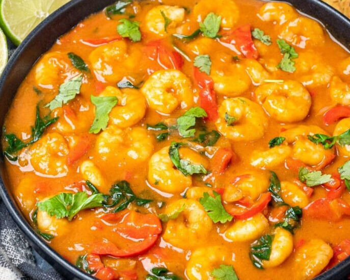

A combo of kinilaw (raw marinated fish) and grilled pork — smoky, tangy, and refreshing all at once.

Fish simmered in coconut milk with leafy greens and chili. Creamy and comforting — a Siargao coastal classic.

Marinated pork belly grilled to perfection, often served with garlic rice and spicy vinegar dip.
Native chicken cooked in ginger broth with papaya and chili leaves. Light but nourishing — great for cooler Siargao evenings.

Juicy prawns simmered in a rich coconut curry sauce with local spices — aromatic and deeply flavorful.
A healthier take on traditional sisig using milkfish — crispy, tangy, and spicy, served on a sizzling plate with egg.